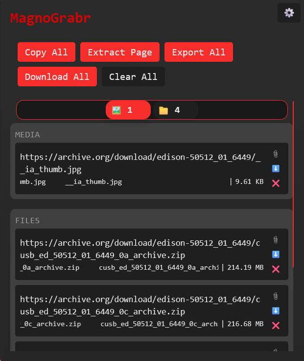

Collect links by hovering over them.
MagnoGrabr is a browser extension that saves every link you point at. No opening, no right-clicking, no copy and paste. Sort the results, remove duplicates and export the list.
Free and open source · Version

screenshots/popup.png
-
Works in 5 browsersFirefox, Chrome, Edge, Brave and Opera
-
No trackingNo ads, no accounts, no analytics
-
Open sourceGPL-3.0 licensed, code on GitHub
-
Local onlyYour links never leave your browser
From browsing to a clean list in three steps.
You stay on the page you're already reading. MagnoGrabr does the collecting in the background.
Hold your key
Hold your activation key (Left Shift by default) to start grabbing. You can choose any key, and switch to toggle or one-key mode.
Hover the links
Move your cursor over the links you want. Each one is saved after a short delay that you can adjust.
Use your list
Open the popup to copy, download or export everything, or clear it and start over.
Everything you need to turn a page of links into a usable list.
Capture without clicking
Grab links as you move across a page. Set a grab delay so a passing cursor doesn't collect things you didn't want.
- Hold, toggle or one-key modes
- Your own activation and end keys
- Extract Page collects every link on the current tab at once
Links are sorted into categories as they are saved.
Organized as you go
Every grab is categorized, deduplicated and labeled with its filename and size, so you can see what you have before you download anything.
- Filter by category, name and size
- Duplicate links are removed automatically
- Filename and file size shown beside each link
Take it anywhere
Export your list in the format the next tool expects, or skip the export and copy or download everything directly from the popup.
- Copy all links to the clipboard
- Download every file in one action
- Set your default export format
Custom cursor
Upload your own cursor to see when grabbing is active.
Instant settings
Change keys and delay in the popup. Nothing to reload.
Lightweight
The Firefox package is about 145 KB.
Cross-browser
One codebase for Firefox and Chromium browsers.
Why not just copy links by hand?
You can. It gets slow once there are more than a handful.
| By hand | With MagnoGrabr | |
|---|---|---|
| Getting a link | Right-click, choose Copy link address, repeat for each one | Hover over it |
| Whole pages | Select and copy links one at a time | One click on Extract Page |
| Duplicates | Spot them yourself | Removed automatically |
| File details | Open each link to find out | Filename and size shown beside the link |
| Output | Paste into a document | Export to TXT, CSV or JSON |
Your links stay on your device.
MagnoGrabr stores everything in your browser's local storage. It has no accounts, no analytics and no ads, and it doesn't send your data to any server.
The only network requests it makes go to a link's own address, to read the filename and size shown in your list. The code is open, so you can check for yourself.
Read the sourceNeeded to detect the links you hover over on the pages you visit.
Needed for Copy All and Copy Link.
Needed for Download All.
None.
Questions
Does it work in Chrome, Edge, Brave and Opera?
Yes. Download MagnoGrabr.zip from the latest release, unzip it, open your browser's extensions page, turn on Developer mode and choose Load unpacked. Firefox users can install directly from Firefox Add-ons.
Why does it need access to all websites?
To see which links your cursor is over, it has to run on the pages you browse. It reads only the link under your cursor while grabbing is active, and stores it locally.
Will it grab links by accident?
It only collects while your activation key is active, and the grab delay makes it ignore quick passes over a link. You can raise the delay in Settings.
Where are my links stored?
In your browser's local storage on your device. Clear All in the popup removes them.
Nothing is grabbing on a page I already had open.
Reload the page once after installing or updating the extension, then try again.
Is it free?
Yes. MagnoGrabr is free and open source under GPL-3.0.
Stop copying links one by one.
Install MagnoGrabr and collect your next list of links in seconds.